| 日付 | 2025年9月14日（日） |
|---|---|
| 山域 | 富士山周辺 |
| メンバー | 家族（妻） |
| 山行形態 | 日帰り |
| アクセス | 車 |
| ルート (Map) | 水ヶ塚公園駐車場 (7:46) - (8:55) 幕岩 - (9:40) 下塚 - (10:10) 上塚 ((10:28) - (10:36) 上塚下塚鞍部 (10:58) - (11:23) 須山下り一合五勺 - (12:26) 水ヶ塚公園駐車場 - (12:33) 腰切塚 - (13:14) 水ヶ塚公園駐車場 |
3連休の中日。あまり天気予報は良くないのだが、西の方は晴れそうなので
富士山中腹にある二ツ塚に行ってみることにする。
登山口も山頂もそれなりの標高があるので、真夏日でも涼しいだろう。
水ヶ塚公園駐車場に車を停める。標高1450m。
残念ながら雲の中。驚くほど寒い。
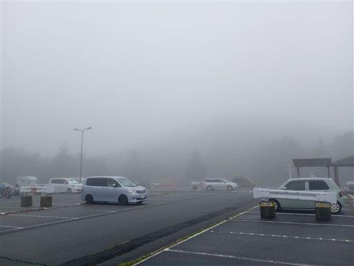
準備を整えて登山開始。
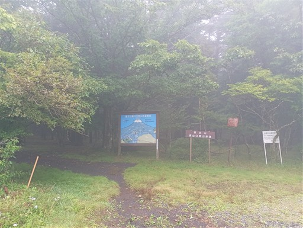
この辺りは富士山の中では標高が低く、周囲は樹林帯だ。
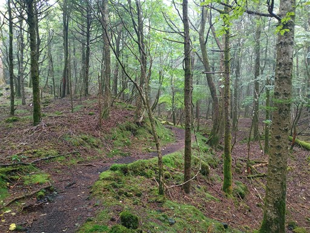
登山道を巨大な倒木が遮っている。
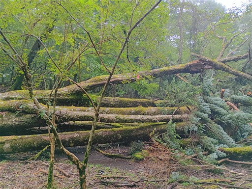
整然と並ぶ木。この辺りは植林地帯なのだろうか？あまりにも整然としすぎている。
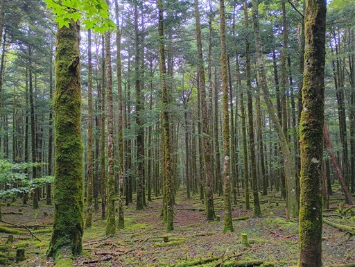
緑広がる登山道が続く。傾斜は緩やかだ。

幕岩の標識があったため、少し足を延ばしてみる。
標識が砂に埋もれている。
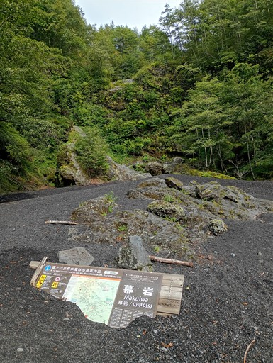
幕岩。小さな岩壁が見られ、水がポタポタと滴り落ちている。
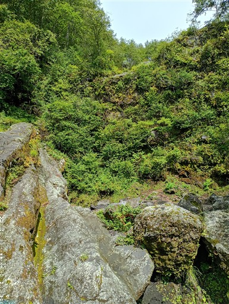
振り返ると、砂の平地が広がっている。
ここは沢の地形になっていて、沢の途中にあるのが幕岩のようだ。
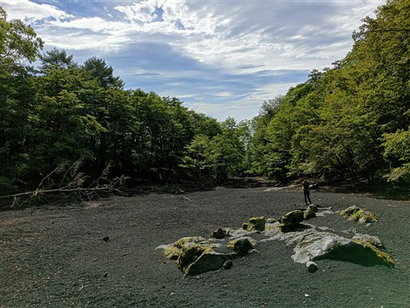
登山道を進むと幕岩の上部に出てくる。
ロープが張られているが、その先に幕岩を眺めていた場所がある。
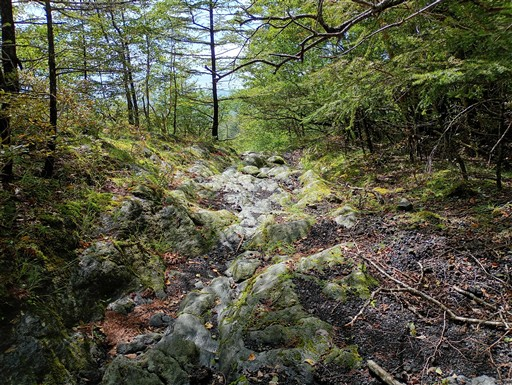
少しずつ標高を上げていくと、木が低くなって富士山が見えてくる。
富士山の山頂部は雲の中に隠れているが、ありがたいことに視界が広がる。
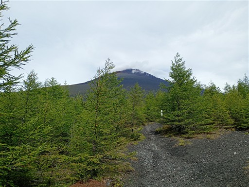
振り返ると愛鷹山、その向こうに伊豆の山々が見える。
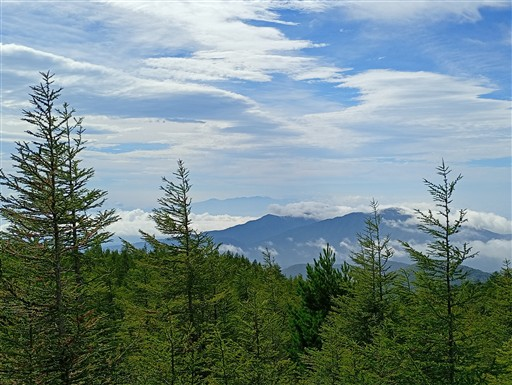
白いロープに沿って登っていく。
目の前に見えるのが二ツ塚の一つ、上塚だ。
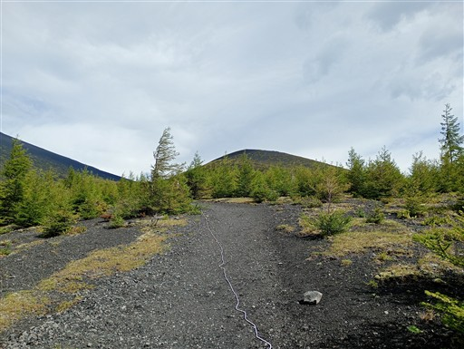
雲は多いが広がる展望は素晴らしい。
眼下に見えるのは自衛隊演習場だ。ずっと砲撃の音がこだましている。
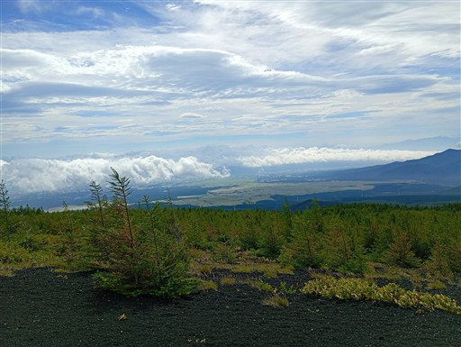
まずは下塚から登る。左が上塚、正面が下塚だ。
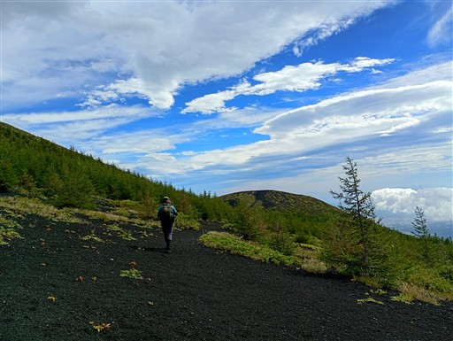
フジアザミ。とてつもなく大きなアザミだ。
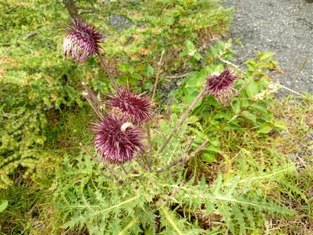
下塚の登りにとりかかる。
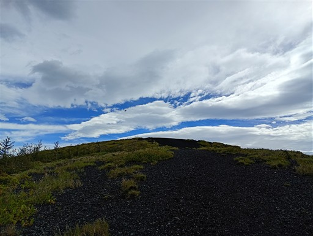
下塚山頂に到着。標高1804m。
富士山中腹のスコリア丘で約2000年前の噴火で生まれたようだ。

山頂に小さな鳥居と、石碑がある。
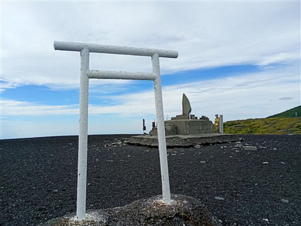
広大な山頂から富士山を眺める。
ちょうど上塚、宝永山、富士山の三山が並んで見えている。
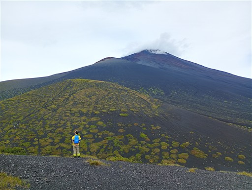
山中湖が僅かながら見えている。背後の山は杓子山と御正体山だ。

御殿場市街。その背後の箱根の山々は雲の中だ。
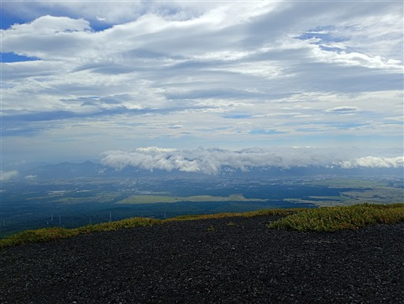
小さな三角点を発見。ハート形にデコレーションされている。
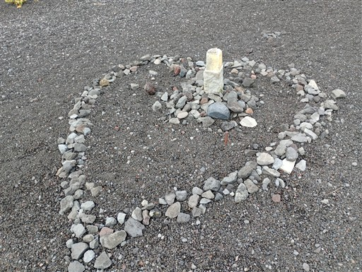
下塚を下る。下塚と上塚の間は庭園のような場所だ。
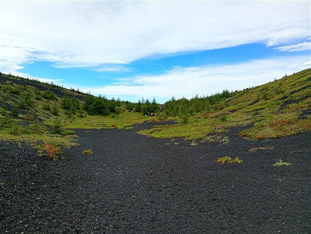
上塚への登りは結構長い。砂が堆積していて非常に登りにくい。
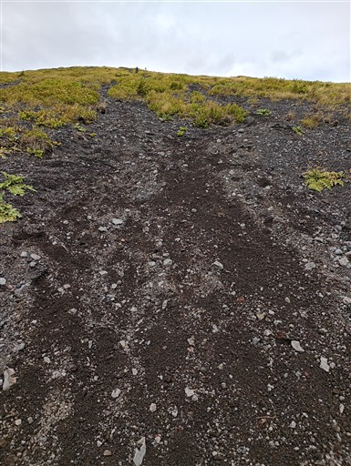
上塚山頂に到着。標高1929m。
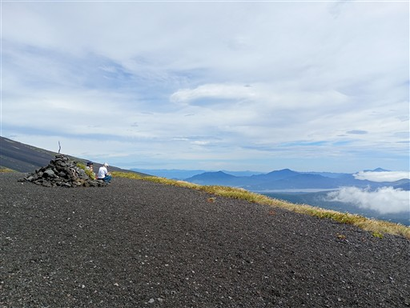
山頂は下塚と同じような雰囲気。
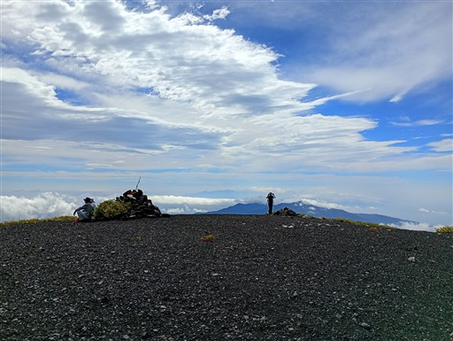
先ほど登った下塚が眼下に見えている。
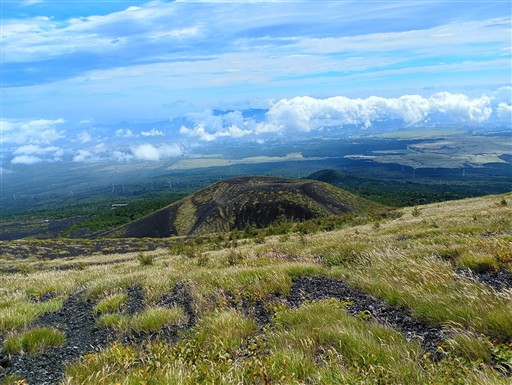
正面の木の無い所が車を停めた水ヶ塚公園だ。
あちらこちらに小さなスコリア丘が見える。
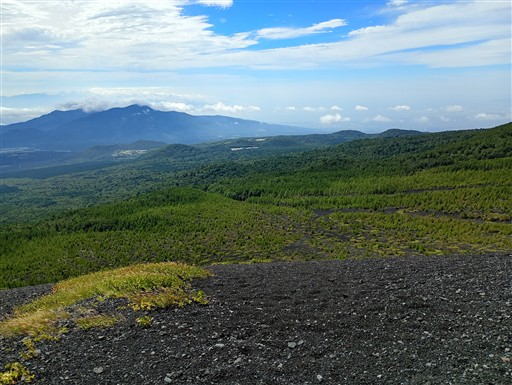
山頂で昼食の半分を食べるが、とても風が強いので撤収。
砂だらけの登山道は登りは辛いが、下りは砂走りのようで楽々だ。
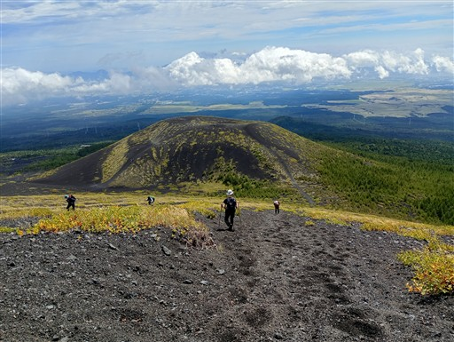
上塚下塚の鞍部で残りの昼食休憩をとる。
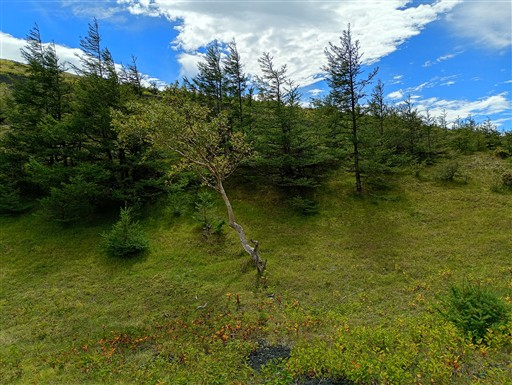
下山は途中までは同じ道を歩くが、須山下り一合五勺から別の道を歩く。
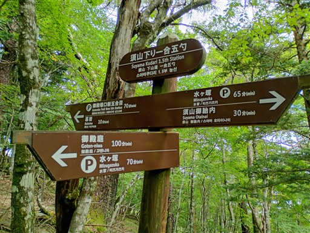
緩やかな登山道。富士山中腹のトラバース道だ。
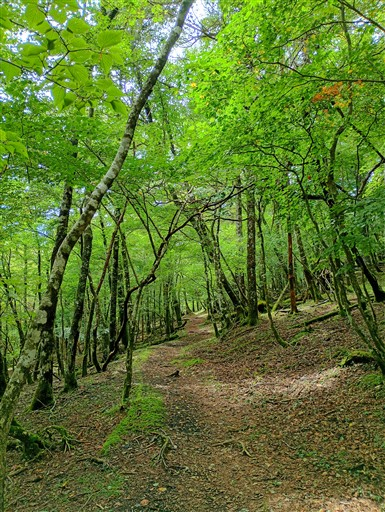
とても目立つ実。調べたらヤマシャクヤクの実のようだ。
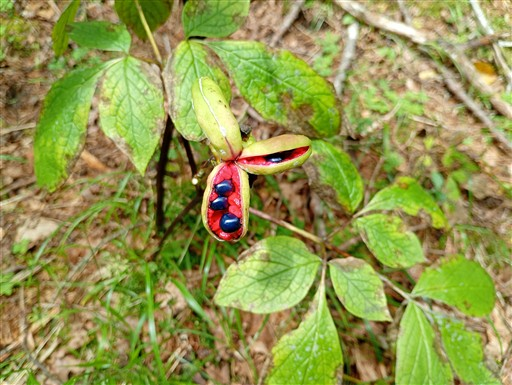
この登山道はコケが多い。巨大なコケが群生している。
調べてみたらホウライスギゴケの可能性が高いとのこと。
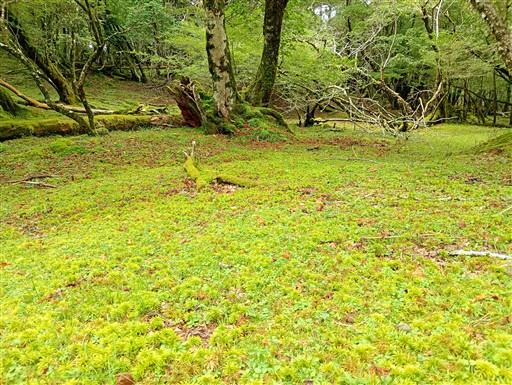
ところどころ、登山道も緑に覆われている。歩く人が少ないのだろうか？
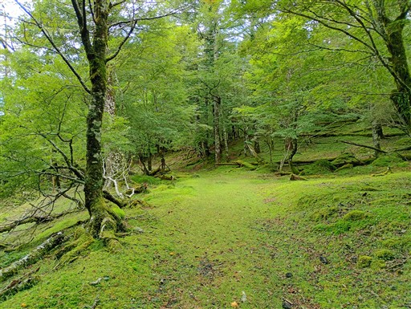
コケに覆われたベンチ。10年以上人が座ってなさそうだ。
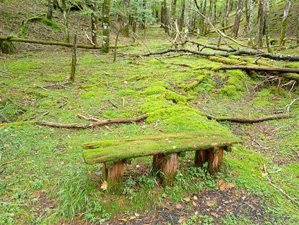
コケが両側から迫っていて道が狭い。
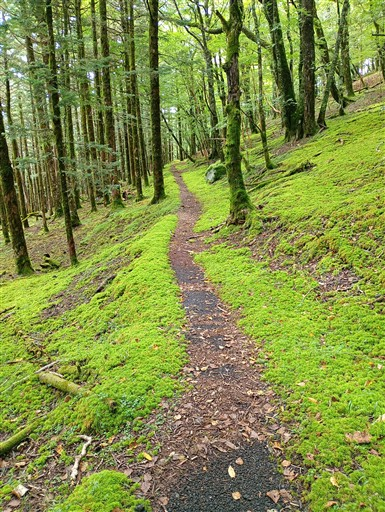
倒木もコケに覆われている。
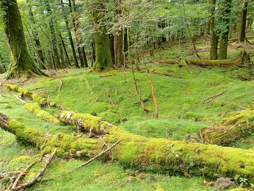
水ヶ塚公園に戻ってくる。
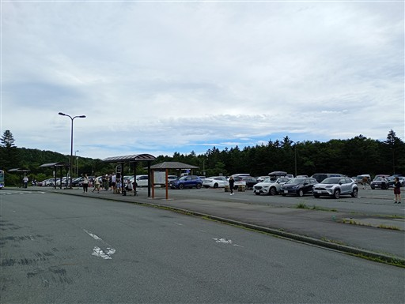
ここから駐車場の側にある腰切塚に登ってみることにする。
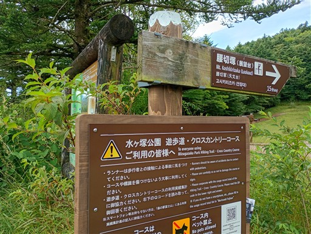
今までなかった階段道。
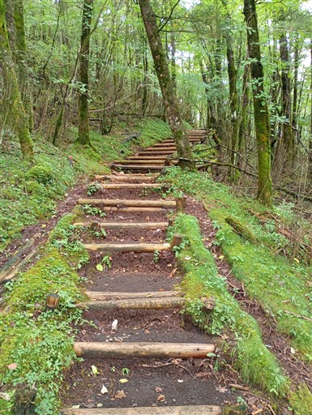
すぐに山頂に到着。大きな展望台が建っている。
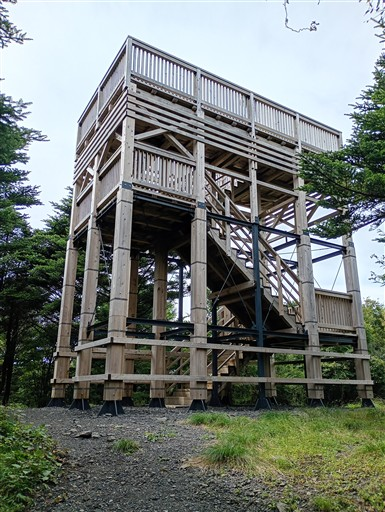
展望台からの景色。富士山が真正面に見える。
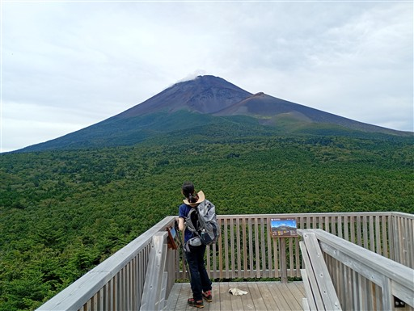
先ほど登った二ツ塚。
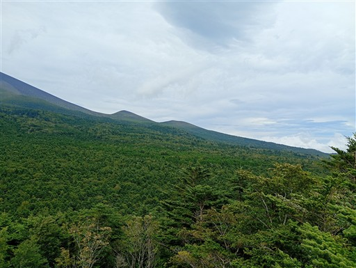
一周10分のお鉢巡りができるようなので歩いてみる。

はっきりそれと分かる噴火口がある。こんな小さなスコリア丘に噴火口があるとは思わなかった。
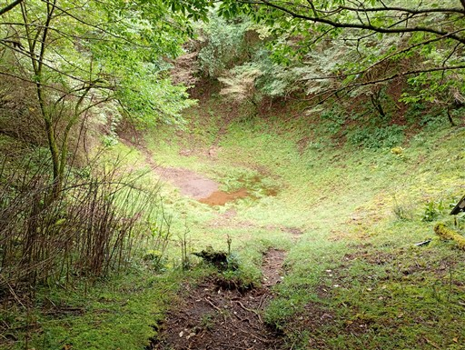
噴火口の底から見上げると、大きな標識が見える。
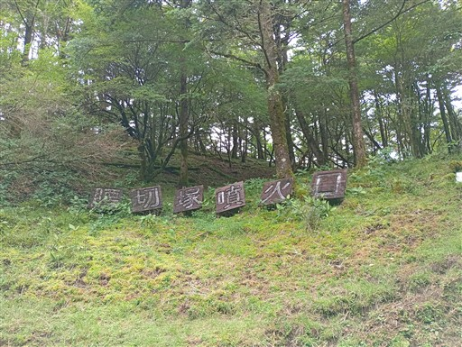
改めて展望台に登ってみる。噴火口付近を眺めてみるが、
わずかに窪みがあるような、ないような、という感じだ。
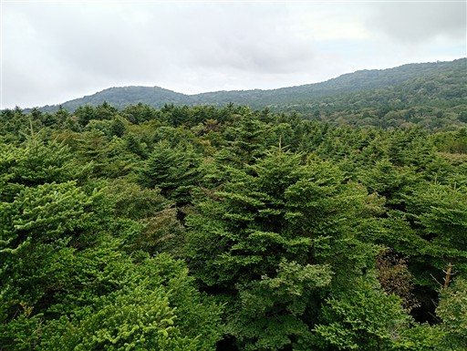
最後に水ヶ塚公園の売店で土産物を買って帰宅する。
二ツ塚をめぐる登山道は思った以上に素晴らしい道だった。
山頂からの素晴らしい展望や、苔生す登山道など、見所が多かった。
植物が数多く見られて、春に歩くのも楽しそうだ。
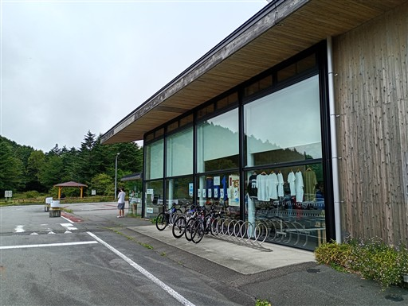